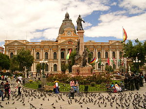

TURWEB
DETALLES
En un breve momento podra observar los sitios que puede visitar.
LUGARES TURISTICOS
1-Cristo de la Concordia
El Cristo de la Concordia es una estatua monumental de Jesucristo, que se encuentra sobre el cerro de San Pedro en la ciudad de Cochabamba, Bolivia, a una altura de 265 metros sobre la ciudad. La estatua mide 34,20 metros de altura, sobre un pedestal de 6,24 metros, con una altura total de 40,44 m. La estatua es ligeramente más pequeña que la estatua de Estatua de Cristo Rey (Świebodzin), (36 metros contando los dos metros de la corona) y es más alta que la estatua de Cristo Redentor en Río de Janeiro, que tiene 30 m, lo que la convierte en la segunda estatua de Jesús más grande del mundo, y la más grande de América Latina.
2.Salar de Uyuni
El salar de Uyuni es el mayor desierto de sal continuo y alto del mundo, con una superficie de 10 582 km² (4085,7 millas cuadradas).
Está situado a unos 3650 m s. n. m. en el suroeste de Bolivia, en la provincia de Daniel Campos, en el departamento de Potosí, dentro de la región altiplánica de la cordillera de los Andes. El salar de Uyuni es una importante reserva de litio e igualmente cuenta con importantes cantidades de potasio, boro y magnesio.

3-Parque Nacional Madidi
El Parque Nacional y Área Natural de Manejo Integrado Madidi se encuentra entre las provincias Abel Iturralde y Franz Tamayo, al noroeste del Departamento de La Paz. Colinda con otras áreas protegidas como el Área Natural de Manejo Integrado Apolobamba, la Reserva de la Biosfera y Tierra Comunitaria de Origen Pilón Lajas y, al oeste, con la Reserva Nacional Tambopata y el parque nacional Bahuaja Sonene del Perú.
El PN-ANMI Madidi se creó formalmente mediante el D.S. nº24.123 del 21 de septiembre de 1995, con una superficie de 1.880.996 ha, dividida en tres zonas: dos correspondientes a la categoría de parque Protegidas.
4-Lago Titicaca
El Titicaca (en aimara: Titiqaqa, de titi, 'gato salvaje' y qaqa, 'cabello cano'; en referencia al gato andino gris) es el lago navegable más alto del mundo, ubicado en los Andes centrales, dentro de la meseta del Collao, a una altitud media de 3812 m s. n. m. entre los territorios de Bolivia y Perú. Posee un área de 8300 km² de los cuales el 56 % (4996 km²) corresponden a Perú y el 44 % (3304 km²) a Bolivia y 1125 km de costa; su profundidad máxima se estima en 281 m y se calcula su profundidad media en 107 m. Su nivel es irregular y aumenta durante el verano austral.
Está formado por dos cuerpos de agua separados por el estrecho de Tiquina; el más grande situado al norte es denominado lago Mayor o Chucuito y tiene una superficie de 6450 km², estando en esta parte su mayor profundidad (283 m), cerca de la isla Soto. El otro cuerpo más pequeño llamado Menor o lago Huiñaymarca situado al sur tiene una superficie de 2112 km², con una profundidad máxima de 45 metros.
El lago Titicaca se encuentra entre las cordilleras andinas en una cuenca de alrededor de 58 000 km².
Es el lago navegable más alto del mundo y ocupa el lugar 19º del mundo por superficie.
5-Paque Nacional de Sajama
El parque nacional Sajama (PNS) fue la primera área protegida creada en Bolivia. Fue creada mediante por el Decreto Supremo del 02/08/1939 bajo la presidencia del Tte. Cnl. German Busch donde establece en el artículo 4º “Mientras se disponga de un mapa fitogeográfico completo del territorio de la República se declara Parque Nacional el bosque de keñua (Polylepis tarapacana) que existe en el Sajama...”. El PNS fue creado con el objetivo de proteger el bosque de keñua. Posteriormente la ley decretada el 5 de noviembre de 1945 ratifica su creación, señalando en el Artículo 1º “Declarándose Parques Nacionales, con todos sus tesoros naturales, con exclusión de las riquezas metalíferas, los cerros de Mirikiri y Sajama, de las provincias de Pacajes y Carangas de los departamentos de La Paz y Oruro, respectivamente”.

6-Carnaval de Oruro
El Carnaval de Oruro es una festividad folclórica y cultural en la ciudad de Oruro, así como la máxima representación de los carnavales en Bolivia, “Obra Maestra del Patrimonio Oral e Intangible de la Humanidad” (Unesco). A lo largo del carnaval participan más de 48 conjuntos folklóricos que son distribuidos en 18 especialidades de danzas que reúnen de distintas partes de Bolivia y que realizan su peregrinación hacia el Santuario del Socavón cada sábado de carnaval en la tradicional “Entrada”.
Esta celebración, por la gran popularidad que alcanzó en los últimos años y debido a su gran manifestación cultural y atracción turística, pasó a volverse uno de los carnavales más importantes conjuntamente con el de Río de Janeiro, Brasil y otros carnavales en el mundo. Alrededor de 400 mil personas visitan anualmente el carnaval, generando un movimiento económico de al menos 125 millones de bolivianos.

7-La Chiquitania
Las misiones jesuíticas de Bolivia, también llamadas reducciones, fueron pueblos misionales fundados por la Compañía de Jesús con la finalidad de evangelizar la región, en lo que actualmente es el Estado Plurinacional de Bolivia. Las misiones de Chiquitos y de Tarija pertenecieron a la provincia jesuítica del Paraguay, mientras que las de Moxos y el resto de Charcas pertenecían a la provincia jesuítica del Perú.

8-Minas de Plata
Las Minas de Potosí fue un importante centro minero que se encontraba en el cerro de Potosí en jurisdicción del Alto Perú (actual Bolivia), al sur de la ciudad de Potosí. El descubrimiento de minas de plata y oro en reservas del cerro Rico fue un suceso que tuvo lugar en los años 1540 y 1570, por acción de la industrialización española en la época del Virreinato del Perú. La noticia corrió por las poblaciones y organismos hispanos, activando las economías de Europa y Oriente durante la colonización.
Fue el patrón plata de la moneda de la India, la rupia; en China y Turquía servía de moneda
9-Plaza Murillo
La plaza Murillo está situada en el centro de la ciudad de La Paz, se convirtió en el centro del poder político de Bolivia después del traslado del Poder Ejecutivo a La Paz como resultado de la Guerra Federal de 1899.
10-Parque Nacional Toro Toro
El Parque nacional Toro Toro, a veces escrito Torotoro, es un área protegida de Bolivia ubicada en la provincia de Charcas, en el norte del departamento de Potosí.
Tiene una superficie de 16.570 ha (165,70 km²) y fue creado el año 1989 mediante Decreto Supremo N° 22269 con el fin de conservar la flora y fauna silvestre de los valles interandinos así como sitios arqueológicos, paleontológicos y espeleológicos.